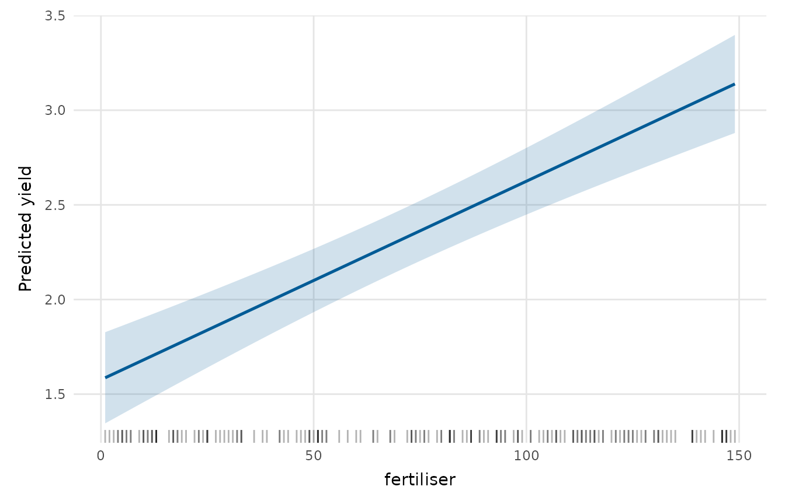
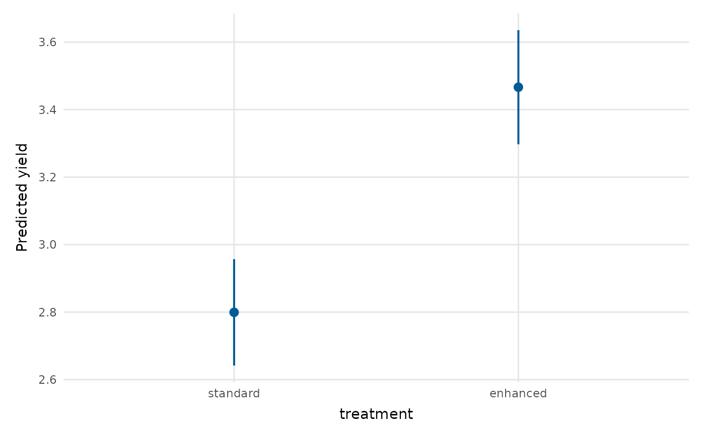
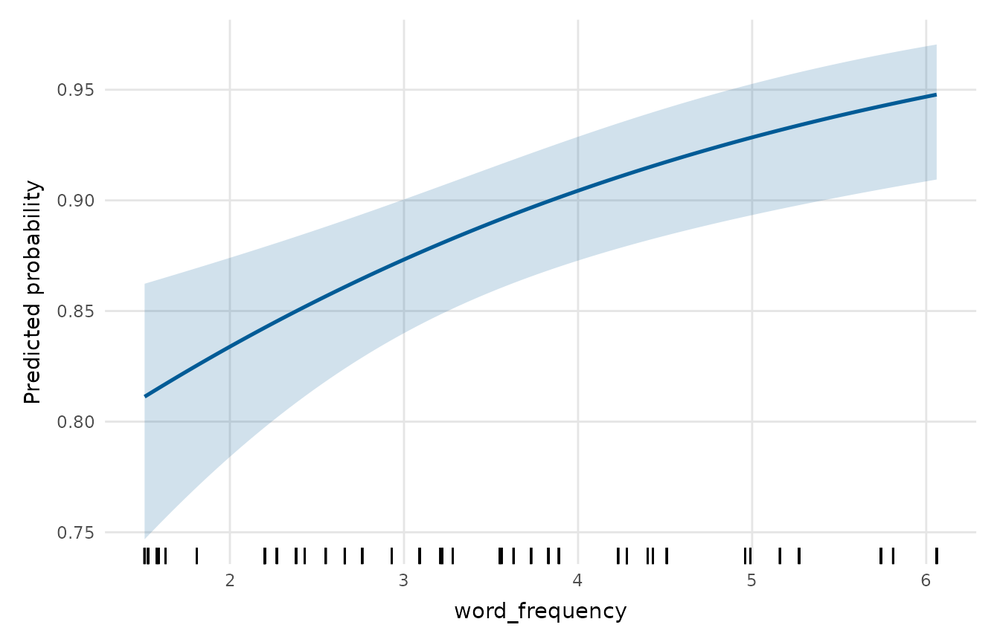

Shows the values a model predicts as one focal predictor varies, holding the other predictors at typical values (the mean for numeric predictors, the most frequent level for factors). A confidence band (numeric predictor) or confidence intervals (factor predictor) convey uncertainty.
Usage
effects_plot(
model,
predictor,
conf_level = 0.95,
n = 100,
rug = TRUE,
colour = depictr_brand(),
title = NULL,
x_lab = NULL,
y_lab = NULL
)Arguments
- model
A fitted model (
lm,glm,merMod, ...).- predictor
Name of the focal predictor (string).
- conf_level
Confidence level for the interval.
- n
Number of points across the range of a numeric predictor.
- rug
Whether to add a rug of the observed predictor values (numeric predictors).
- colour
Colour for the line/points and band. Defaults to the depictr brand blue.
- title, x_lab, y_lab
Title and axis labels.
Value
A ggplot2::ggplot object.
Details
Predictions and standard errors come from stats::predict(); glm
predictions are formed on the link scale and back-transformed, so a binomial
model shows predicted probabilities. Mixed models fitted with
lme4::lmer()/lme4::glmer() are supported too: predictions use only the
fixed effects (re.form = NA) and standard errors come from the fixed-effect
design matrix and vcov(). Works with lm, glm and merMod; other model
classes are attempted on a best-effort basis.
Examples
fit <- lm(yield ~ rainfall + fertiliser + treatment, data = crop_yield)
effects_plot(fit, "fertiliser")

effects_plot(fit, "treatment")

gfit <- glm(accuracy ~ word_frequency + condition,
data = lexical_decision, family = binomial)
effects_plot(gfit, "word_frequency") # predicted probability
